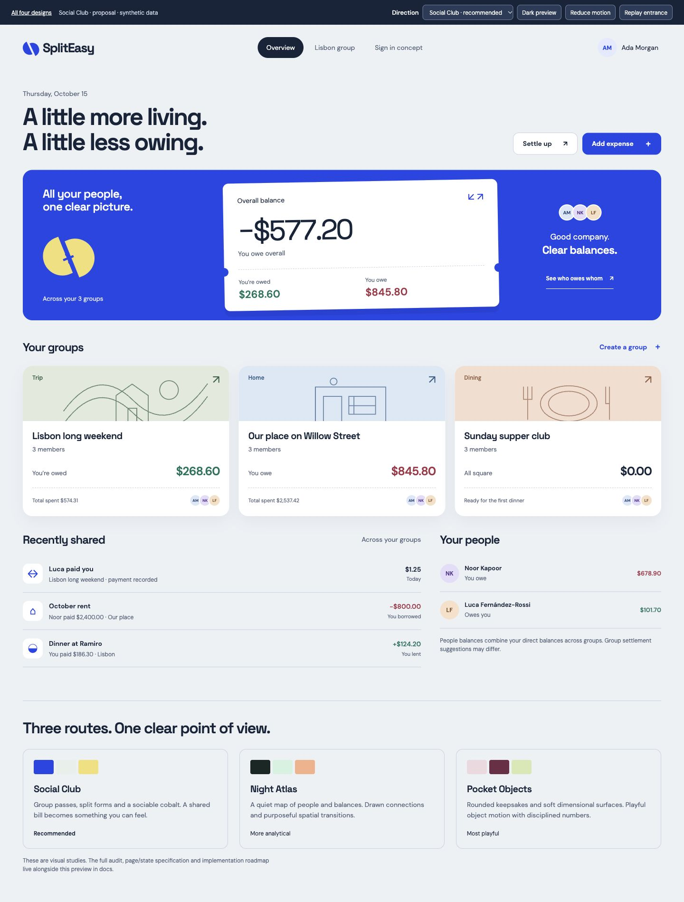
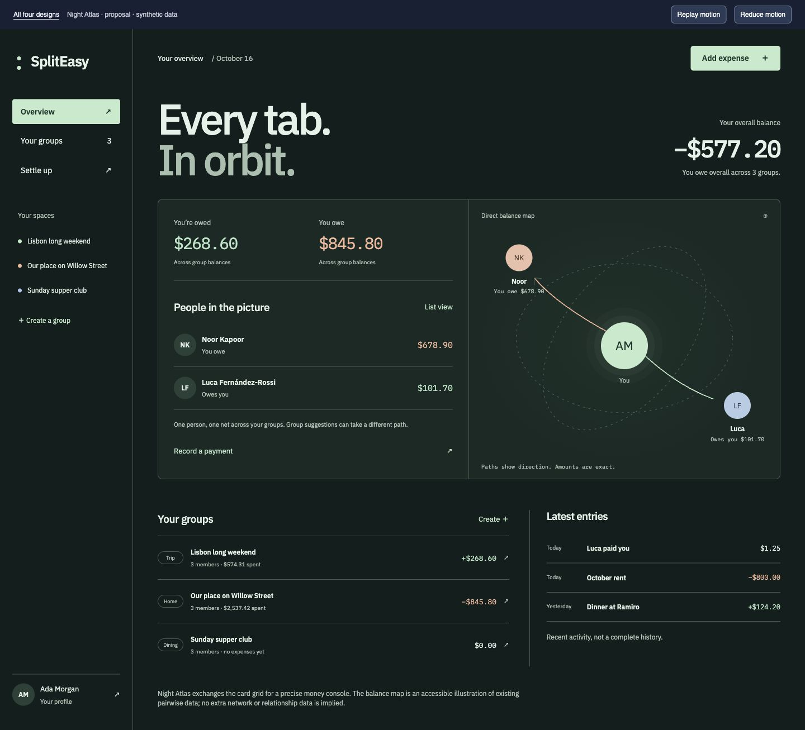
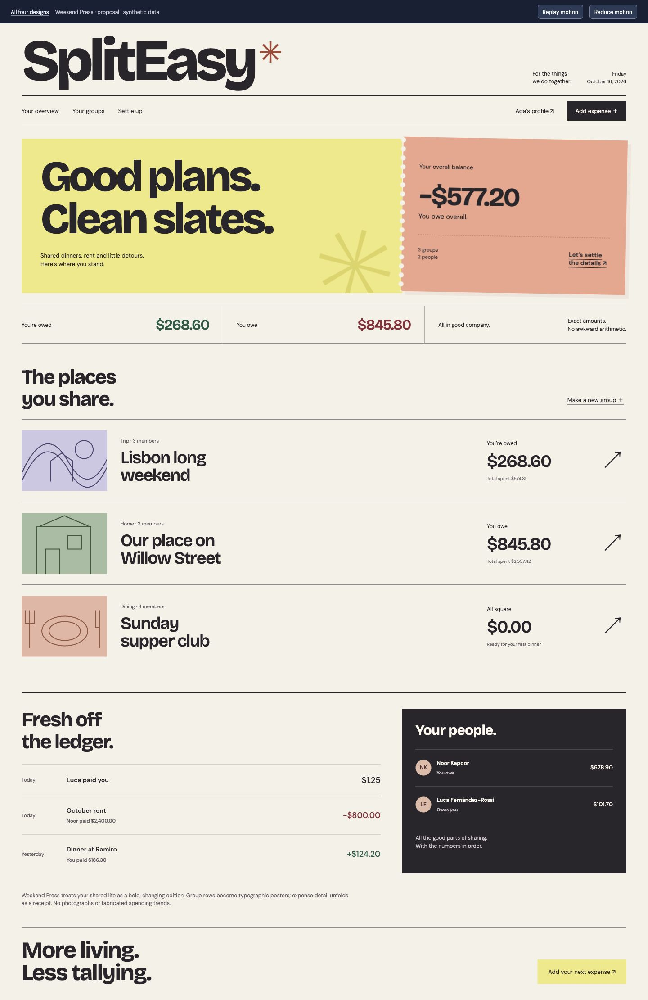
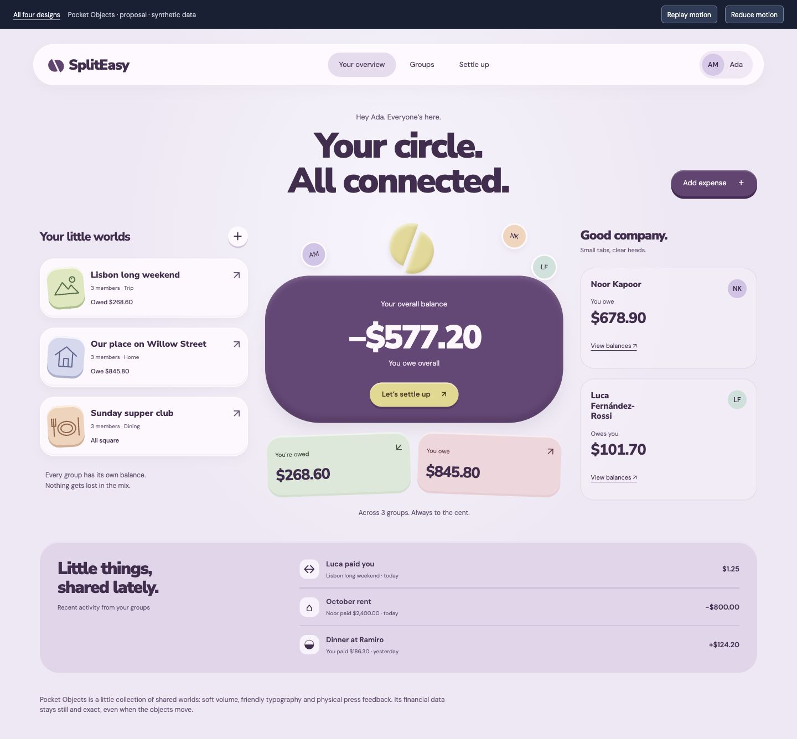

01 · The social oneSocial Club
Cobalt, split seams and illustrated group passes. Sociable, tactile and easy to navigate. The best balance of character and everyday usability.
Space Grotesk + DM Sans · light & darkSplitEasy · design proposals · October 16, 2026
Four art directions. Twelve palettes. Light and dark for every option. Open a study, try Add expense and Settle up, and resize it to a phone. All data is synthetic; these previews do not change the application.
Compare all 12 palettes in light & dark →

01 · The social oneCobalt, split seams and illustrated group passes. Sociable, tactile and easy to navigate. The best balance of character and everyday usability.
Space Grotesk + DM Sans · light & dark
02 · The precise oneA considered money console. Forest green, warm directional paths and a direct-balance map. Compact groups and an exact numeric rhythm.
IBM Plex Sans + IBM Plex Mono · light & dark
03 · The bold oneA new edition of your shared life. Oversized typography, paper receipts and groups as poster rows. The furthest departure from a standard finance dashboard.
Bricolage Grotesque + DM Sans · light & dark
04 · Selected directionA soft collection of shared worlds. Physical press feedback, rounded type and small keepsakes. Warm and expressive, with financial values held still.
Nunito Sans + DM Sans · light & darkSelected direction: Pocket Objects with Seafoam & Petrol as the default. Users can choose Lilac & Plum or Peach & Cocoa, each in light or dark mode. Silk Ribbon is the pointer; mobile adds a short touch trail and tap bloom.
Written design specification
Current UI audit & screenshot evidence
Try Silk Ribbon, Comet Trail or Echo Rings in the Pointer menu on every design. Original studies: compare four animated cursor treatments.